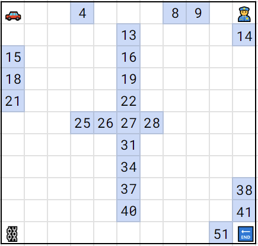
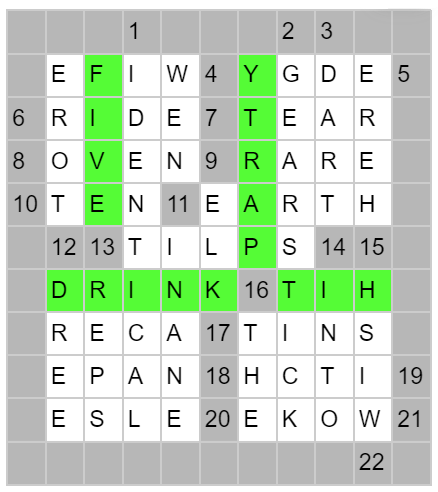

Solution: 52 Spaces
Answer: PUNCH
Written by Jonathan
This puzzle provides a list of cryptic clues. The 2 puzzles associated with this Communiter puzzle is pretty clearly 52 instructions and 40 spaces. We can note that all of the extra 12 spaces in the middle of the grid belong to Simon. We also note that the number of cryptic clues we have matches exactly the number of lines Simon has (that we used for extraction) in 52 instructions. We can thus associate the cryptic clues with each of Simon's lines to match up with one of the spaces in 52 spaces (we might consider trying assigning in monopoly order, but there is no way to order the extra spaces in the middle, so we simply order by page order in the pdf).

You should get something like this grid, with the spaces in the middle not confirmed (they can move left or right within each row).
Next we need to start thinking about the grid fill. Looking at clues 21 and 22 on space 41 and 51 respectively, the fact that cryptic clue 11 has 3 clues, and perhaps thinking about the game of monopoly where you travel in 4 different directions, should all point towards the fact that we can fill in the words not just rightwards and downwards but also leftwards and upwards. We want to fill in the grid, being careful to fill in words according to their orientation of the clues (i.e. a clue starting at the bottom (Row with Go in it) going upwards should have a word which starts at the last row and to be read upwards). Orientations are not provided, but any clues at the border can be assumed to only be read inwards. Note that we also only fill in 1 letter at a time per blank space, and any space with anything written is assumed to be a black space (i.e. part of the border). There is only 1 way to correctly fill the grid such that each blank space has exactly 1 letter. The full grid is shown below.

Finally, in the grid there are 4 unclued words, 1 in each orientation. We can read these 4 words by the direction you travel from the monopoly starting square, getting the cluephrase HIT PARTY DRINK (5) which clues the final answer PUNCH.
Author's Notes
Huge thanks to Celestine, Wilson and aki for helping write the cryptic clues!
Appendix
1. IDENTICAL = IDENTICAL: The same (def) citadel in disarray (anag "citadelin")2. GEARSTICK = G+EARS+TICK: It's moved in a car (def) finally (last letter) making -> g sound receivers -> ears emit clock sounds -> tick
3. DART = D+ART: Dali's first (first letter) -> d painting -> art a small projectile (def)
4. WIFE = WIFE inits: Michelle to Barack (def) welcome in florida's elected leaders (first letters of the 4 words) -> wife
5. EDGY = ED GY: Cool (def) in a crowd(ed gy)m
6. RIDE = RID+E_: Journey (def) to eliminate -> rid head (first letter) of enemy -> e
7. TEAR = TEAR ddef.: Cry quietly (def) "RIP" (def)
8. OVEN = OVEN__: Beginning half of November -> nove messed up (anag) turkey-roasting appliance (def)
9. ELK = E_L_K-: Killer oddly (take odds) -> KLE overturned (read backwards) deer (def)
RARE = RARE ddef.: Unusual (def), not well done at all (def)
10. TEN = TEN ddef.: Number (def) this clue (def)
11. EARTH = EARTH: Heart-broken (anag), it lies beneath your feet (def)
INANE = I(NAN)E: Silly British (def) grandmother -> nan enters (inside) old browser -> IE
NEW = N+EW: Modern (def) fitness center (take center letter) -> n Ugh -> ew
12. DREE = D(-eg)REE: Endure (as a Scot) (def) dropping out (remove), for example -> eg, from a college qualification -> degree
TORE = TO+RE: Email recipient -> to and reply -> re fields came apart (def)
13. REPS = REP__S: Regarding -> re the limits (first and last) of pull-ups -> ps: it's how many times you do it (def)
14. INTO = IN+T+O: In -> in time -> t, Oscar -> o is interested (def)
SPLIT = S_+P_+LIT: Initial (first letter) secret plot -> sp preceding (before) exciting -> lit M. Night Shyamalan film (def)
15. HERE = HER+E: Girl's -> her final (last letter) date -> e in this place (def)
16. THE = _THE: Article (def) in (contained) A(the)ns
17. ACER = ACER: Mad (anag) race for a PC maker (def)
TINS = T(_IN)S: Soulless (first and last) things -> ts held (within) in -> in containers (def)
18. NAPE = NAP+E_: After sleep -> nap, start to extend -> e neck (def)
19. ITCH = (-p)ITCH: Need to scratch (def) proposal -> pitch after the beginning (drop first)
20. ELSE = _E_L_S_E: Take bits regularly from (alternating letters) her losses -> else instead (def)
21. WOKE = W(OK)E: Aware of social issues (def), we -> we embody (around) approval -> ok
22. WISH = W+ISH: Desire (def) for a win -> w sort of -> ish